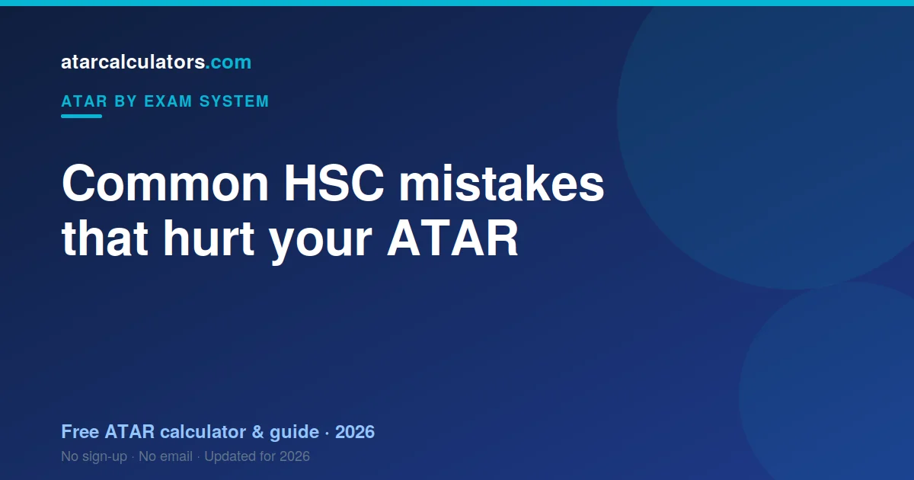

Common HSC mistakes that hurt your ATAR include choosing subjects only because they sound easy, ignoring how scaling works, neglecting your internal ranking, and leaving compulsory subjects like English to the last minute. Most are avoidable once you understand how the HSC and ATAR actually work.
Key takeaways
- Choosing subjects only because they sound easy can backfire.
- Ignoring scaling leads to poor subject choices.
- Neglecting your internal ranking costs moderated marks.
- Leaving English to the last minute is risky — it is compulsory.
- Dropping to a lower-scaling subject only helps if you rank higher in it.
- Most HSC mistakes are avoidable once you understand the system.

Mistake 1: Choosing subjects only because they sound easy
Picking a subject just because it seems easy is a common trap. Easy-sounding subjects often draw broad cohorts and scale modestly, so a middling mark in one may not help your ATAR much.
Choose subjects you can do well in and stay motivated for. A strong mark in a subject that suits you beats a lazy mark in one you picked to coast.
Mistake 2: Ignoring how scaling works
Many students never learn how scaling works, then are surprised when their ATAR does not match their marks. Scaling adjusts each subject based on cohort strength, so your scaled marks matter, not just your raw ones.
Understanding scaling helps you choose subjects wisely and set realistic expectations. See HSC scaling explained.
Mistake 3: Neglecting your internal ranking
Half your HSC mark is internal, and it is moderated in rank order against your cohort’s exam results. So your position in your class directly shapes your mark.
Students who ignore their rank leave marks on the table. Every internal task is a chance to climb, so treat each one as if it counts.
Mistake 4: Leaving English to the last minute
English is compulsory, and two units of it always count towards your ATAR. Students who neglect English because it is not their favourite subject can drag down their aggregate.
You cannot avoid English, so give it real attention. A solid English mark protects your ATAR, whatever your other subjects are.
Mistake 5: Chasing scaling blindly
The opposite mistake is picking brutal, high-scaling subjects you cannot do well in. A high-scaling subject only helps if you rank well in it. If you struggle, you gain nothing from the scaling.
A strong mark in a subject you are good at beats a weak mark in a high-scaling one. Use scaling as a tiebreaker, not a reason to torture yourself.
Mistake 6: Dropping subjects for the wrong reason
Dropping a subject rarely helps as much as students think. Your ATAR uses your best 10 units, so a weak subject often counts for little already. Dropping it may just remove a safety net.
Is it bad to drop to a lower-scaling subject? Only if you would have ranked higher in the one you left. If a lower-scaling subject lets you rank near the top, it can be a smart move.
Mistake 7: Coasting on internal assessment
Some students plan to “cram for the exam” and coast through internal tasks. But internal assessment is half your mark, and it builds a rank that protects your result. Coasting throws away marks you have already been offered.
Treat internal tasks seriously across the whole year. A strong run of them steadies your mark, whatever happens on exam day.
Mistake 8: Comparing yourself to others
Constantly comparing your marks to friends’ is a subtle mistake. The ATAR is a rank, so what matters is your own goal, not how you stack up against a particular classmate.
Find the ATAR your course needs, and aim for that. A personal target is far more useful than comparison, and much better for your wellbeing.
See your real ATAR estimate
The best way to avoid these mistakes is to see how your choices play out. Our HSC ATAR calculator uses the latest official scaling to estimate your ATAR from your marks.
Try different subjects and marks to see what really moves your rank. It replaces guesswork with a clear picture.
Mistake 9: Poor time management
Leaving assessments and revision to the last minute is one of the most common and costly HSC mistakes. Cramming rarely produces the depth of understanding the HSC rewards, and it adds stress that hurts your performance.
Spread your work across the year. Break big tasks into smaller steps, use a simple schedule, and start revision early. Steady, planned effort beats a frantic sprint, and it protects both your marks and your wellbeing.
Mistake 10: Ignoring past papers
Some students revise by re-reading notes and never practise under exam conditions. This is a mistake, because the HSC exam tests how you apply knowledge under time pressure, not just what you know.
Past papers are the best preparation there is. Do them timed, then review where you lost marks. That targeted practice lifts your exam performance more than hours of passive reading.
Mistake 11: Neglecting your wellbeing
Treating Year 12 as a test of endurance, with no sleep and no breaks, backfires. Your results depend on being able to think clearly, and that needs rest, exercise and time away from study.
Burnout costs marks. A sustainable routine, with proper sleep and regular breaks, keeps you performing across the whole year. Looking after yourself is not a distraction from your ATAR; it protects it.
How to avoid these mistakes
The common thread is understanding the system and working steadily within it. Learn how scaling and your internal rank work, choose subjects you can excel in, and give every assessment real effort across the year.
Do that, and most of these mistakes solve themselves. The HSC rewards consistent, well-informed effort far more than last-minute intensity or clever-looking shortcuts.
Mistake 12: Not asking for help
Some students struggle in silence rather than asking teachers, tutors or classmates for help. This wastes time and marks. Teachers know exactly what the markers want, and a quick question can save hours of confusion.
Ask early and often. Whether it is feedback on a draft or help understanding a concept, seeking help is a strength, not a weakness. The students who ask tend to improve fastest.
The real cost of these mistakes
Individually, these mistakes seem small. Together, they can cost real ATAR points: a subject chosen poorly, a rank left uncontested, an exam under-practised. The good news is that each one is avoidable.
Understanding how the HSC and ATAR work, and acting steadily on that knowledge, prevents most of them. Awareness is most of the battle, and you now have it.
The one habit that prevents most mistakes
If you want a single habit that heads off most of these mistakes, it is this: understand the system, then act on it steadily. Learn how scaling and your internal rank work, choose subjects you can excel in, and treat every assessment as it comes.
Consistent, well-informed effort beats both last-minute panic and clever-looking shortcuts. Most HSC mistakes come from misunderstanding or neglect, and both are fixable with steady, informed work across the year.
Common questions
What are the most common HSC mistakes?
Common HSC mistakes include choosing subjects only because they sound easy, ignoring how scaling works, neglecting your internal ranking, and leaving compulsory subjects like English to the last minute.
Does subject choice affect my ATAR?
Yes, but not the way many think. Your ATAR uses your best 10 units, so the subjects you score highly in matter most. A strong mark in a subject you are good at beats a weak one in a high-scaling subject.
Is it bad to drop to a lower-scaling subject?
Only if you would have ranked higher in the subject you left. If a lower-scaling subject lets you rank near the top, it can produce a stronger scaled mark than struggling in a high-scaling one.
How does internal ranking affect results?
Half your HSC mark is internal, moderated in rank order against your cohort’s exam results. So your position in your class directly shapes your mark, and climbing even a place or two can lift it.